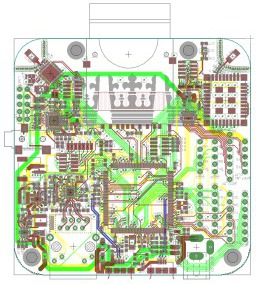

^^dkl is an Open Source hardware project that is being developed in cooperation between the City of Cologne and Press Every Key UG. The platform is intended to bridge the gap between devices similar to Arduino, which allow physical access to sensors via electronic protocols and device like Raspberry Pi that allow comfortable programming and access to higher level facilities like Ethernet, USB and Bluetooth at the cost of system complexity.
The system is intended to be used with applications that require immediate interaction with the physical world, but need to interact with the Internet or user devices. Furthermore, technical expertise required to customise and operate the platform should be reduced to a minimum.
Such systems could range from citizen participation platforms such as intended by the city of Cologne, smart outdoor multiplayer games that players can interact with using their smartphone, but also more classical embedded applications such as providing web based access to machines in production facilities.
The microcontroller is a high end ARM Cortex M3 processor from NXP available in several variants depending on specific requirements. The microcontroller provides electronic protocols, such as i2c, SPI and UARTs, as well as 10-bit ADC and DAC capabilities. Furthermore SD communication is supported, and a full-size SD card slot is populated on the board. The controller allows high speed USB, and the board is fitted with two micro/USB sockets, one of which OTG and allows the board to function as a USB master device. This allows the device to be used as a peripheral as well as controlling USB peripherals connected to the device.
| NXP LPC1837 | This chip is being used in a QFP-144 form factor and is available in a compatible dual core variant should more performance be necessary. (user manual) |
| Clock | 180 MHz |
| RAM | 136kB SRAM |
| Nonvolatile Memory | 1024kB flash, 16 kB on-chip EEPROM |
| Peripherals | SPI/SSP, I2C, U(S)ART, CAN, most IO pins are available as solderable connector points on the board in 2.54mm pitch. |
| DAC - ADC | one 10bit DAC, two 10-bit ADC supporting up to 8 analog channels. 400kSamples/s |
| USB | two interfaces with DMA support. Host/Device/OTG and High Speed possible. Both interfaces populated with microusb connectors |
| SB - MMC | SD/MMC communication supported, board features |
| Power Sources | Power supply via USB or dedicated plug, battery |
| Charging | Board features LTC4080 power managment IC with facilities for lithium battery charging (datasheet) |
| Voltage Boost | TPS2500 boost converter to allow hassle free operability with 5V devices (Arduino) as well as provide external USB-OTG devices with 5V voltage source. Integrated level shifters for selected IO pins (datasheet) |
| Switchable Peripherals | Power supply to all on board peripherals can be physically deactivated via firmware to reduce energy consumption. |
The board features two internet devices: a dedicated 100 MBit PHY directly controlled by the microcontroller RJ45 ethernet jack as well as packaged WiFi module to allow wireless communication.
| Ethernet | 10/100T with dedicated PHY and magjack RJ45 connector on board with firmware ethernet stack |
| WiFi | TI CC3000 based Wifi, Antenna. IEEE 802.11 b/g, embedded ethernet stack. (datasheet) |
A Bluetooth 4.0 (LE) controller is available on the board along with antenna, allowing the device to provide both central and peripheral roles. This allows device interaction with, e.g. smartphone applications as well being able to communicate with Bluetooth peripherals with no further components.
| nrf51822 | Nordic NRF51822 controller with radio, matched antenna. Firmware allows central and peripheral role of device. (datasheet) |
Last but not least the device features a dedicated sound controller with microphone and headphone driver as well as an integrated speaker amplifier.
| TLV320AIC3100 | low-power, highly integrated, high-performance codec which provides a stereo audio DAC, a mono audio ADC, and a mono class-D 4-Ω speaker driver. (datasheet) |
You can find the Eagle Source files for the schematics, board layout and bill of materials in the hardware github repository.
Device firmware is currently being developed. Currently libraries to provide basic access to major microcontroller features and on-board peripherals exist. We are currently evaluating a real time operating systems (either Contiki or FreeRTOS) to port to he board allowing a standard programming model on the board. The firmware itself is open source and as far as possible, dependencies to proprietary software are avoided*. Firmware development is possible and currently being realised using a fully open source, command line based development toolchain, allowing for a low entry barrier. Proprietary development environments are also available to develop the board. The firmware is implemented in C.
You can access the current work in progress state of the firmware in the firmware github repository.
Press Every Key UG was founded 2012 in Cologne, Germany by Matthias Krauß and Tim Becker. The company is specialised in technically ambitious prototype development focusing on mobile and embedded hardware applications. Their first Open Source Hardware project was the Everykey embedded development board.